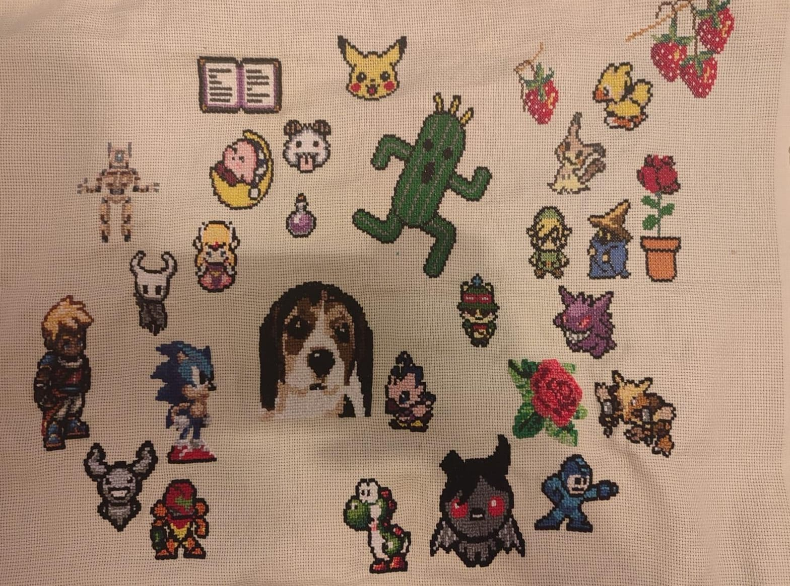
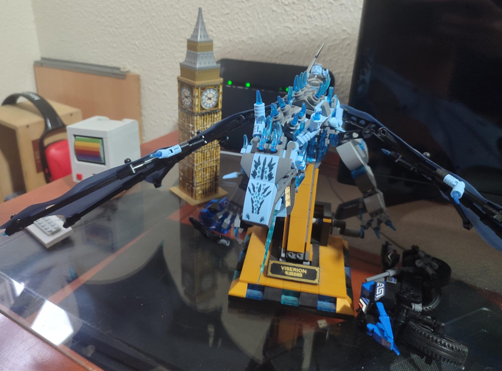
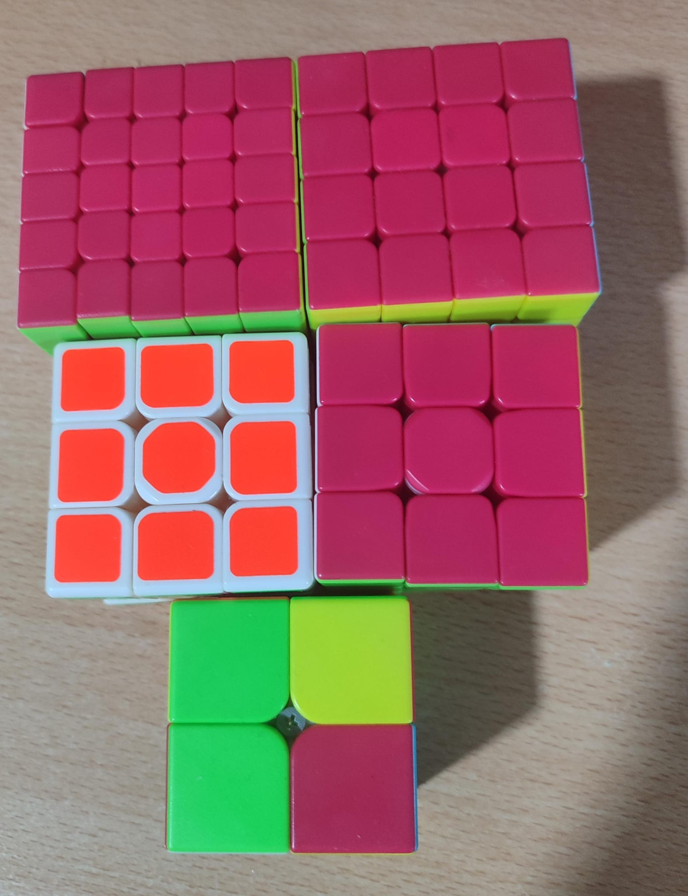

Hobbies
En mi tiempo libre me mantengo activo con una variedad de actividades que van desde la programación personal hasta la costura. Cada hobby me aporta algo diferente: concentración, creatividad o simplemente hacer que el tiempo vuele.

Costura y punto de cruz
Hace un par de años buscaba un hobby nuevo y descubrí la costura y el punto de cruz. Me pareció fascinante cómo, en el fondo, es física aplicada: hilos bajo tensión, buscando la forma de minimizarla para cada tipo de costura.
El punto de cruz se convirtió rápidamente en mi pasatiempo favorito porque me permite plasmar cualquier cosa (personajes de videojuegos, series) sin necesitar grandes habilidades artísticas. La foto es mi primera tela de práctica.
También conectó directamente con mi proyecto de fin de ciclo DAM: quise usar sprites diseñados en punto de cruz para el videojuego Alegoría.

Maquetas y puzzles
Todo empezó con un Lego de dragón de Juego de Tronos que me regaló mi familia. Tres días en los que el tiempo desapareció: las piezas encajando exactamente donde debían, la construcción tomando forma, la satisfacción de ver quedar cada vez menos piezas.
Desde entonces hice muchas más maquetas y Legos, hasta que tuve que empezar a desmontar las más antiguas por falta de espacio donde colocarlas.

Cubos de Rubik
Aprendí a resolver el cubo de 3×3 y fui subiendo hasta el 5×5. La realidad es que no tiene tanto mérito como parece: es seguir una serie de pasos e ir completando figuras hasta llegar al 100%.
Curiosamente, el único que nunca conseguí resolver fue el de 2×2, que por tener menos dimensiones se resuelve de forma completamente distinta al resto.
Videojuegos
Los videojuegos han acompañado toda mi vida. De pequeño siempre pude jugar sin problemas porque fui responsable con la escuela (algo que mi madre siempre tuvo claro). Con el tiempo se convirtieron en mucho más que entretenimiento: han sido mi lugar seguro en los momentos más oscuros.
He jugado de todo: sentimentales, cómicos, de estrategia, de acción. Creo que cada tipo de juego encaja con un momento distinto de la vida. No es casualidad que mi proyecto de fin de ciclo fuera un videojuego.
Lectura
Llevo leyendo desde pequeño. El libro que me enganchó a la lectura habitual fue El Valle de los Lobos de Laura Gallego. Con el tiempo mis intereses se ampliaron hacia la política, la ciencia y la tecnología.
Empecé a coleccionar libros antiguos de informática (son baratos porque ya están obsoletos) y me parece fascinante observar cómo ha evolucionado la programación. También me llevaron a leer sobre los padres de la informática: Alan Turing y Ada Lovelace, sus carreras y sus algoritmos.
Programación personal
Uno de mis hobbies ya documentado en la sección de Desarrollos: programar pequeñas apps para resolver
problemas cotidianos. Mientras buscaba piso de alquiler creé una app para guardar los pisos y sus datos,
conectada a una base de datos Access. Antes que eso, hice un mini-repositorio casero que guardaba el contenido
de un archivo como .txt.
Programar para uno mismo tiene algo especial: el problema es real, el usuario eres tú y el feedback es inmediato.
Otros
Juego al ajedrez, me gusta escribir relatos e investigar sobre temas que me llaman la atención. De pequeño practiqué voleibol y competí en natación, y el cardio siempre me ha ayudado a liberar tensiones, aunque mis problemas médicos me han impedido retomarlo recientemente.
En definitiva, muchos hobbies que, aunque algunos llevo años sin practicar, me han dado perspectiva, paciencia y ganas de seguir aprendiendo cosas nuevas.